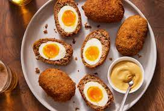

Odin Recipes
Authentic style tacos. Stepmoms will love you. Stepdads will accept you.
- Flank Steak
- Marinade
- Cilantro
- White Onion
- BBQ grill steak.
- Fry tortillas.
- Top with veggies, lime, and hot sauce.

Fire roasted meat with 12 seasonings and fixings. Yum!
- Lamb
- Spices
- Veggies
- Blend meat.
- Spit grill.
- Assemble!

This is medicine for the soul.
- Coconut Milk
- Chicken Broth
- Chicken and Veggies
- Mix liquids.
- Add veg at the right time!
- Eat and love life.

Frank's Red Hot step aside. This is the new I put that @#$@ on EVERYTHING!
- Orageno
- Vinegar
- Olive Oil
- Parsley
- Chop veggies.
- Mix veggies and liquids.

Thanks San Diego. Well played.
- Carne Asada Steak
- Fries
- Fixings
- Cook steak and fries.
- Mix with toppings.
- Defend yourself!
It's meat on a stick cooked with fire. Need I say more?
- Meat
- Fire

William Wallace ate 450 a day. Be like him.
- Eggs
- Meat
- Boil egg.
- Cover in meat and fry!

Best made with Silver Salmon.
- Smoked Salmon
- Sour Cream
- Cream Cheese
- Go Salmon fishing.
- Smoke salmon.
- Make stuff!

There's entire chains dedicated just to this thing. Make them.
- Rhodes Cin. Buns
- Follow instructions on bag.

You get to use a blow torch to make it.
- Vanilla beans!
- Cream
- Follow all directions.
- Finish with blow torch!